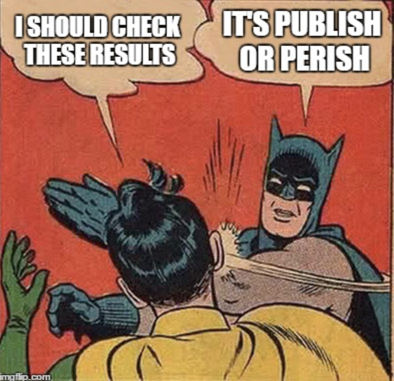

The Fall of the Information Age
Posted on July 21, 2025
Introduction
A video came across my instagram feed recently that stopped me in my tracks. The ‘Prompt Theory’ video which was powered by Veo3 ai video generator.
Lack of new information
The old information systems are defunct in our modern world. Newspapers, radio, even television have been on a steady decline over the past decade. The smart phone has effectively replaced all of them, and with it a new culture of information has grown. This is the culture of click-bate, where attention is valued above all. As a result of this many newspapers, television networks, and radio networks have adopted the policy of, ‘if you can’t beat them join them’. The space for slow paced, deep, long form media has to a large extent disappeared, although some space remains in the podcast/audiobook world. The space for investigative journalism has been squeezed out as the need for constant clicks and algorithm adherence steers media companies towards quantity over quality. The mechanisms for keeping politicians, private companies, or drug cartels in line, i.e. through deep investigative journalism have been weakened. This type of journalism may take months or years of investigation without an article being written. Influencers and institutions clamouring for attention at all times, so nobody has time for that.
Corruption of Science
Another avenue by which we acquire new information is scientific research. Unfortunately scientific research has become increasingly unreliable for two main reasons;
1. The publish or perish model of research.
2. The ease with which data can now be falsified.
The economic system by which universities and scientific journals stay afloat requires papers to be churned out rapidly. From these papers, universities gain grant funding. Journals are paid per article published, not by the quality. The amount of scientific papers published has exploded and so has the workload of scientists to produce such papers. The primary goal of producing a scientific paper is shifting slowly away from communicating interesting findings, and towards appealing to grant funders. There have been many data, and plagiarism scandals at elite universities over the past couple of years to show this.The Harvard scandal and other such scandals.
The curious case of Francisco Gino comes to mind. The post-doctoral researcher at Harvard, studying honesty and ethical behaviour who was shown to have falsified data on said research. This came amid allegations of plagiarism directed at Claudine Gay, Harvards President at the time had plagiarised some of her research. These incidences both occurred at Harvard, and both within a year. It is easy to see these cases as individual academics taking the easy ways out, but perhaps we can see this in light of a systemic pressure to produce article after article. The number of fraudulent articles has grown massively in the last few years and is having a hugely negative impact on the scientific community.
Paper Mills
Due to the publish or perish model that has festered in scientific institutions. We have seen a rise in ‘paper mills’. These journals will publish fake science for a profit. These paper mills survive as a result of a rot that has settled in academic science. Science is slowly falling into the trappings that the scientific method was designed to avoid. These are, the trappings of money and authority bias. Scientific institutions earn a lot of money from subscription fees to their journals. Because universities don’t want to have gaps in their libraries, they are in effect forced to subscribe to them. As a result, scientific journals are incentivised to churn out journals, reducing the quality and needlessly taking time away from the actual research. Scientific institutions are reliant on this model or they will be forced to shut down. The economics by which science survives is anathema to the scientific method. What does this do to our corpus of knowledge?
Personal Experience
When I saw the ‘Prompt Video’, the world felt different. Our informational systems seemed to be on the decline for some time, but this was a seismic shift in the way that we must process information. This allows for fabricating videos which are almost indistinguishable from real videos. With ChatGPT, the same is true for written text. Would you know if the book your reading was written by ChatGPT? Certainly, colleges are having a hard time parsing essays for Ai generated content. Ai models such as ChatGPT (a large language model), Veo3(a text to video generator), and various Ai audio generators change our paradigm. Our relationship to information, visual, audio, text... have been changed so profoundly that it will take generations to truly understand it.
Information Age vs. ChatGPT
The transition for computers for calculation purposes, to home computers, to internet, to smart phones has been a story of the freeing of information. This information could be generally sourced for reliability if necessary. ChatGPT also produces information very quickly, however, it performs more like an oracle, conjuring information from the ether. With our previous informational systems, the source of the information was a human. A human did the work, and if that human had fabricated data, this would stain their reputation. With ChatGPT this is not so. Because of the model that ChatGPT is based on it splices and sometimes invents information and data. SampleQA, a test that checks for hallucinations (times when information is inaccurate) found that GPT4.5, the latest model hallucinates 37.1% of the time. This does not fully jive with our experience of using the model as these tests are designed to test the model. For everyday tasks, I have found ChatGPT to be more than 37.1% reliable, however, the general impression that it gives near perfect answers almost all the time is far from true. We need to know what we are dealing with when interacting with ChatGPT.
Cheapening of information
It is interesting what psychological impact this exposure to a seemingly endless oracle of information has on us. It is shown to be often inaccurate, however that is not our perception, as that is not how the information is presented. ChatGPT would never say, ‘I’m not really sure about the following’. It tends to confident even when it is wayward. We believe what it tells us. It feels like magic. However it does not uncover new information. It only collates information that already exists and explain it in a way that information is already explained. However our perception of it as an oracle damages our stream of new information in two ways;
1. When free information is presented as fact, we tend to believe that we need not spend money on ensuring that the source of our information is good.
2. We feel that there is no point spending money on investigative journalism as anything of note will be spat out with the right prompt.
Both of these assumptions, although very natural are incorrect.
On ChatGPT Information is Probabilistic
As we interact with ChatGPT our relationship to information changes. This is because the relationship that LLMs(The technology that ChatGPT is based on) themselves have to information is entirely different from our own. LLMs are trained on huge amounts of data like books, internet articles, blogs... from this they learn to predict sentences. Because the datasets which they are strained on are so huge, theoretically, the LLM will converge on truth and coherent answers. For simple everyday tasks, this is almost always true. It is a great replacement for googling silly things. However on higher order tasks, tasks with a small existing dataset, it can fly off the rails quickly.
Optimise for credibility rather than truth
These models are language models, both in name and function. They are not truth models. They have not been trained to be the most accurate regurgitaters of information. They have been trained to communicate in a way that is credible and human-like. We need to understand this if we are going to use LLMs for tasks. The LLM is not designed to help you in your pursuit of truth, although it can do that in many domains. It is designed to communicate like a person. It is designed to convince you that there is someone behind the curtain. They are designed to pass the Turing test. They have been trained to convince, and they are incredibly good at this, better than us.
Inaccuracies
As mentioned previously, the newest model of ChatGPT has a hallucination rate of 37.1%. This is high, and with certain tasks, especially ones involving logic this rate goes up. The problem with the hallucinations of ChatGPT is not just that it is producing inaccurate information, but also that it does so convincingly. If you have ever encountered a hallucination directly, as I have before while researching, you almost feel as if you are being gaslit. In my experience, it has shown fake sources, with fake authors and fake institutions. When I looked the paper up, I thought I must be doing something wrong here. The I looked up the authors. They proved to be non existent. ChatGPT is a powerful tool when used correctly, but to use it correctly we must understand what it is and what it is not.
Interactability
With LLMs we are essentially trading interactability and convenience for accuracy and traceability. This can have very positive effects.This interactive relationship with information means that we can learn more quickly and easily. If I am reading a book and I don’t understand something I will have to reread, look up some words, or simply move on. However, on ChatGPT, I can ask further questions which will be answered. This is much more like human-to-human learning. It also has an ability to produce material extremely quickly. Open ChatGPT and type the following prompt; ‘Give a summery of the Dubliners by James Joyce as told by a modern day dubliner in a pub’. The answer is in many ways breathtaking and allows for more accessibility to certain types of information. The problem is that these systems also produce misinformation extraordinarily cheaply, quickly and easily. Try typing the following into chatgpt; ‘can you produce an article in the style of a scientific journal which shows that clowns don't cry.’ Although this is a harmless example, it is easy to see how this would be misused. Unfortunately we already see examples of misuse.
Studies on effects of ChatGPT on brain function
Studies on the effects of using LLMs such as ChatGPT are coming out and they do not show positive results. They find that use of ChatGPT reduces brain activity and over time got lazier. This is not a surprising finding. It is a simple case of use it or lose it. If we outsource thinking, we will lose our ability to think. If we lose our ability to think, we will find it very difficult to do deep research, whether that be scientific research or journalistic research. “The ideal subject of totalitarian rule is not the convinced Nazi or the convinced Communist, but people for whom the distinction between fact and fiction... no longer exists.” - Hannah Arendt, ‘The Origins of Totalitarianism’ p.474
Ai produced content
Like the hallucinations mentioned earlier, convincing misinformation can be produced intentionally using ChatGPT. Papers can be produced with fake data. Unless a huge amount of fact checking is done it is almost impossible to distinguish real from fake. There are attempts to check for the use of Ai in essays but they are not very good. There are many things that Ai is good at and the number 1 thing is convincing you of the reality of its outputs. ChatGPT behave much like an incredibly complex version of predictive text. It predicts what one would say in response to your questions. It predicts what outputs would look most human-like. It is for this reason that many believe in a theory called the dead internet theory.
Dead Internet Theory
The ‘Dead Internet Theory’ is a theory which states that the material on the internet is mostly produced by Ai bots. This includes, web pages, blog posts, YouTube videos, to commenters on Reddit... This is a theory that is gaining popularity due to some high profile cases of Ai bots posing as humans, such as the ‘The Velvet Sundown’, an Ai generated band circulating on Spotify. This is a deep theory with many layers, which perhaps I will do a blog post on one day. The simple verdict on ‘Dead Internet Theory’ is that the internet is neither fully human nor fully Ai generated. Very informative, I know. It is extremely difficult to evaluate how much is one or the other and I think this belies the problem of the time we are living in. I am attaching some links in case you (yes you, the reader) have a spare 10 hours to jump down a rabbit hole;
Test with travel blogs
The world of internet research can make your head spin. Before you know it you start falling into these rabbit holes left and right. Before you know it, you’ll believe that the world is a frisbee. To keep myself grounded I like to perform little experiments from myself. I will start with a simple question; How many of the top travel blogs can I tied to real people. I know that this is not a scientific way to test this. It is more of a sanity check for me. So after looking up travel blogs on google and removing duplicates I was left with: Cassidy travel
Effitimonholiday
Travel Department
Nomadic Matt
Click and go
Turquoise holidays
TDactive holidays
Abbey travel
After extensively diving into each blog, finding authors names, and doing research on each of these authors I was only able to tie 3 of the authors to anything that would substantiate their identity, Facebook, Instagram, LinkedIn, or a photograph on google images. These were Nomadic Matt, Gaby Coughlan from Turquoise Holidays, and Bridget Delany from Travel Department. This doesn’t necessarily tell me much, but at least there are some real people on the travel blog side of the internet.
It’s the Vibes Man
The ‘Dead Internet Theory’ started with people on internet forums discussing how the ‘vibes’ of the internet were off. The internet was not the same as it was before. It used to be a place to converse and make connections with people. This side of the internet had slowly faded, leaving a void. When we are starved for real information, vibes is all we have left to make inferences about the world. Our growing use of ‘vibes’ to judge the world is proof that we are starved of real, quality information. This is not an accident. There is money to be made from controlling information, controlling narratives, and of course convincing people to buy rubbish that they don’t need.
Consumerism and Ai
The power of marketing in the modern day is to convince you that the new thing, is somehow better than the thing you already have. It is to spin us into a frenzy of consumerism, retail therapy, and false promises. Many analogies can be drawn to the recent advancements in LLMs. Their real power is in convincing. No matter how suspect the present information is, it is terrifically convincing. It is easy to predict how these models may be used in the advertising industry to further advance the interest of consumerists. This will even further subjugate those who are already prayed upon by the advertising industry.
Parallels to Consumerism
One cannot help but notice the the matching trend of this technological development and the trend of consumerism in our culture. The story of ChatGPT is a story of the swelling of information. Quantity over quality. It is a story of convenience. 1 well made wooden bucket replaced by 15 easily broken but also easily replaced plastic buckets. A few personal or well crafted videos replaced by a seemingly infinite hole of Ai generated videos. The kids call these ‘brain rot’, quite an apt description. Interacting with a real person on the internet, replaced by an attractive but hollow facsimile. Interestingly, the people at ChatGPT saw fit, to design one of their voice models after Scarlet Johansson from the movie ‘Her’. I don’t think, they understood this movie.
Grok Debacle
Elon Musk’s new Ai experiment ‘Grok’ had a surprising turn a couple of weeks ago. It began to align itself with Nazi views, condoned Hitler, and began calling itself ‘MechaHitler’. This is a ridiculous but also very telling case study in how these LLMs can be used for evil. In this episode the hate spewed by Grok was so obvious that it was treated as a laughing stock. But what happens when the hate or propaganda becomes more subtle and harder to detect. People by the millions, or potentially billions could be manipulated in accordance with the whims of the people who control these systems.
Lack of accountability and transparency
The dominion over information that the dictators or monarchs of the past has was being eroded by the freeing of information in the Information Age. It is difficult to pinpoint exactly when this started to reverse itself. When was it that tech moguls and state forces began to realise that if they united, that none of them would have to be held accountable. Case Study: Suchir Balaji, deceased whistleblower, such a common phrase that has become. A whistleblower who dies by suicide just before they are due to give evidence. Suchir Balaji was a former employee of OpenAI, the parent company of ChatGPT, he was a researcher tasked with training the Ai with large datasets. However he noticed that much of the data used to train the model was copyrighted. He brought this up internally and subsequently sought to bring it to court. In between filing the motion and giving evidence, he shot himself at a very strange angle. The San Fransisco Police Department and the Chief Medical Examiner concluded that it was a suicide.
Targeted information
The algorithm is this mystical thing that the average consumer has no understanding of. There is a Kafkaesque nature to it. This thing will rule your life, or at least your online life, but you have no understanding of it, no knowledge of how it works, and no ability to change it. In the mystical world of ‘the algorithm’, the general public is clueless. The wool can be pulled over our eyes so easily, and what can we do about it? How would you know if a social media company is targeting videos to intentionally make you have a pathological level of self doubt. How would you know if ChatGPT was censoring certain information, how would you know if a celebrity video was actually made with deep fake technology, how would we know if social media companies are intentionally manipulating people. In fact we know that some of these are with out a doubt true.
What is real?
We are in a new era. That has happened. Information is nebulous and can be easily fabricated. The institutions with control over our informational systems are shrouded in secrecy. They are difficult to question and even if we could question them, we wouldn’t understand how they work. We as a people need to understand how not in control we are. I live in a democratic country, but in effect the world as we know it is not even close to democracy, no matter where you live. In order for there to be a democracy, the populous must be well informed. We are controlled through our screens 6hours and 38mins per day. Big tech companies have so much data on the average person. Text, articles, who websites can be fabricated quickly and easily. Videos, which were once the highest form of evidence (probably still are) can be fabricated quickly and easily. What and who can we trust? How do we prevent ourselves from being manipulated.
Authoritarianism and abusive relationships
In 2022 Merriam-Webster named ‘gaslighting’ their Word of the Year. How prescient this was. Not only because we became increasingly aware of the non-physical aspects of domestic abuse and abuse of other kinds, but also because gaslighting is integral to authoritarianism. We have seen this very clearly in the past week, as Donald Trump attempts to gaslight the world into ignoring a predatory child-sex trafficking ring involving some of the most powerful people in the world, which was potentially used for blackmailing and possibly has ties to intelligence agencies. Trump announced, ’Their new SCAM is what we will forever call the Jeffrey Epstein Hoax’ on Truth Social. The reason why gaslighting is so necessary to perpetuate abuse is become the abuse victim must doubt the truth of what they see. We are empathetic creatures, when we are gaslit, our emotional and logical circuits are at odds, we are paralysed by cognitive dissonance. In the wake of this paralysis, the abuser/authoritarian seizes control.
Perception and Beliefs
As the coffers of information become more opaque, what is the regular person supposed to do? They become increasingly dependant on the new systems, while paradoxically becoming less aware of where this information comes from. They read articles written by LLMs, watch TV shows generated by Ai video processing, and consume news which uses both. How are they to know what is true? How are they to know what is real? The people who have the levers of power in this world, not only control material goods, or institutions. They control the world at the level of perception. This is exacerbated by the fact that our perception is far more malleable that we would like to believe. The feeling that we have that we are observing the objective world through our eyes is an illusion. Sight is itself subjective.
Beliefs
When information fully deserts us, when we have been stripped of our knowledge of the world and it’s happenings, what do we have left? We have the only thing that can never be taken from us, that is our deepest beliefs and our spiritual connection. When I say our spiritual connection, I do not mean our knowledge of the Bible, the Talmud or the Qur’an. I mean that sense that is within us all that transcends intellectuality which tells you what is right and what is wrong. They cannot take that from us, though they may try. Because we will be starved of falsifiable information, we will be left to simply choose what to belief or disbelieve in. We must choose wisely.